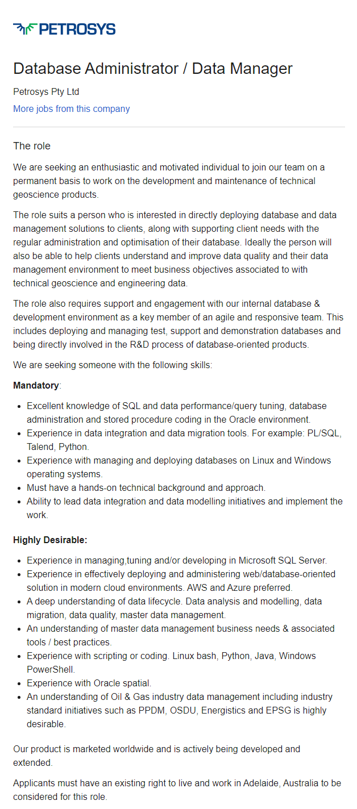
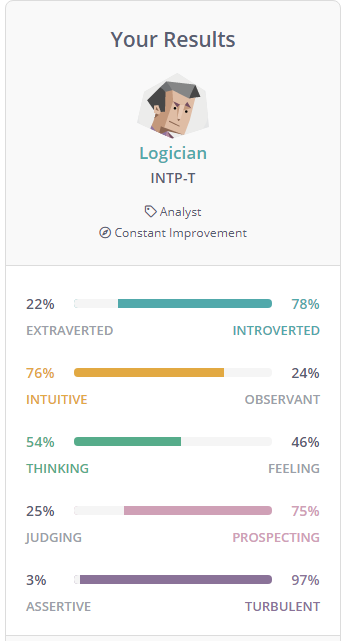
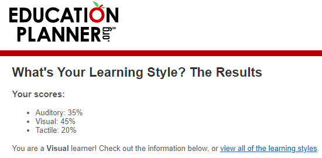

Personal Information
Name: Harrison Ervin
Student number: S3895375
Background information:
All of my living family is Australian, I don't have a lot of cultural diversity when it comes to my family life. I finished Year 12 last year at Ballarat Clarendon College with a 94.55 ATAR studying English, English Lit, Further Maths, Theatre Studies and Data Analytics, so this is naturally my first year studying in higher education. My birthday is the 22nd of October and I’m currently 18.
Fun fact:
I spend quite a lot of my free time trying to consume as much media as possible. For the most part, that consists of films, anime, and video games, but I also have a rather large backlog of literature to read, as well as a few live action television shows.
Interest in IT
What is your interest in IT? When did your interest in IT start? Was there a particular event or person that sparked your interest? Outline your IT experience (if any).
I’ve never been fully cognizant of where my interest in IT has come from. Despite me not having access to a computer until I was 10 years old and not having a mobile phone until I was 15, I’ve always been fascinated by computers and IT in general. I think it largely stems from me having played video games from a really young age which provoked an interest in computers in general.
Due to me having been diagnosed with dysgraphia since I was around 12, I’ve always used my laptop in classes and assessments/exams for the sake of legibility, which also extends to me spending quite a lot of time using my laptop in general.
My primary interest for IT comes to dealing with large quantities of data. This does in part stem from my school offering Data Analytics as opposed to Programming in VCE, but I’ve always had an interest in analysing data – finding trends and the like – so my primary interest is something in the field of analysing data, or just working with large data sets (such as database management work). Due to that being my only exposure however, I’m very much trying to keep my choices open for the time being so I can determine what I want to focus on as I progress with my degree.
Why did you choose to come to RMIT?
The main reason I chose RMIT was because I had heard positive things about the job opportunities offered by the university and seeing as I wish to spend as little time as I can manage between obtaining my degree and getting into the workforce, I was incentivised to choose RMIT.
Similarly, I’ve heard praise about the curriculum in general which interested me, particularly seeing as the university itself has technology in the name.
What do you expect to learn during your studies?
I’ll be honest, I’ve come into this course with a largely open mind. While I have a great deal of interest in IT, I’m not strongly familiar with a lot of the aspects that go into the overall field. My ultimate goal is to learn whatever inspires me to pursue a serious career, but at present I do not have any specific answers for what I would expect to learn.
Ideal Job
The job advertisement.

The Position
This position is for a database administrator and data manager at Petrosys Pty. Ltd., an Adelaide-based company that specialises in providing geoscience products for the gas and oil industry. This role would include working with clients in order to provide database/data management solutions and providing regular administrative work and advice to clients regarding the data they are collecting. Furthermore, it would also working with an internal database at Petrosys in order to manage databases and the research and development process.
This position largely appeals to me because it involves the maintenance of data and working with clients in the interest of data that would need to be collected, which aligns with my interest in working with data. (Admittedly the field of geoscience isn't something that I have as strong an investment in as some other areas, but it was the most interesting one I could find available.)
Required skills/qualifications.
Extensive awareness and understanding of database administration in SQL programs and general procedure in an Oracle environment. Furthermore, a background in working directly with these database systems, particularly integration and migration, as well as deploying the databases on both Windows and Linux would be required.
While not necessarily 'required', Petrosys is also seeking for people who are accustomed to using Microsoft's SQL Server, as well as integrating database systems in a cloud environment. Similarly, they also seek applications who have an understanding of scripting or coding, as well as an understanding of the general oil and gas data management practices in the industry.
Current skills/qualifications (and how I’m going to get the qualifications I need).
Because my current experience when it comes to working with data is largely in the form of collecting/analysing it through Microsoft products (such as Excel) and not necessarily the management of a large database for long-term use, I’m admittedly fairly underqualified if I were to apply to the job at present.
While I have a basic understanding of how database management works, the majority of my exposure has been with creating databases in Microsoft Access, hence I would need to transition my understanding of database management from Access to an SQL environment and getting accustomed to using it in more advanced ways, such as deploying databases on a cloud service. Furthermore, I would need to expand my knowledge of programming, which I aim to do over the course of my degree.
Profile



What do the results of these tests mean for you?
I believe that the results of these tests are rather appropriate to my overall personality. I’ve taken the Myers-Briggs test several times over the last four years, and I’ve consistently been an INTP-T, with the primary four traits hovering around 50-75% with the extra trait being overwhelming turbulent. While I’m objectively quite intelligent, I’m prone to mood swings that tend to drastically affect my productivity and opinion of myself, largely stemming from my almost complete lack of self-confidence.
How do you think these results may influence your behaviour in a team?
Stemming from my introverted personality, I have quite a lot of trouble talking to people I’m not familiar with in a team setting, which can often lead to me being scared/hesitant to talk to other people concerning my ideas, and quite frequently I tend to unintentionally abstain from joining in on team discussions. Similarly, due to my heavily turbulent personality and lack of emotional stability, I tend to have a negative outlook on my own contributions, which is part of the reason why I find myself leaning towards being heavily agreeable most of the time and quite passive when it comes to team discussions.
How should you take this into account when forming a team?
Because I can be quite passive and agreeable when it comes to working in a team, I largely prefer to work with people who I either have interests I relate to (in order to help me come out of my shell and be less introverted) or people who are a lot more ‘gung-ho’ when it comes to working so I don’t have to worry about attempting to maintain discussions. This isn’t to say that I lack the interest to contribute – much the opposite – I just have difficulties having the confidence to collaborate in team discussions unless I have people I can connect to or that have a more outgoing personality, so those are the sort of people I would want to form a team with.
Project idea
Overview:
My project is a “photo shoot simulator” for the mobile rhythm game Uta no☆Prince-sama: Shining Live (henceforth referred to as ‘Shining Live’). Shining Live is a part of a Japanese type of game called a ‘gacha’ game – short for gachapon, a type of capsule toys dispensed from a crank-operated vending machine. In Shining Live, there is a system called ‘Photo Shoots’ which follow this practice, allowing players to obtain a random ‘card’ of varying rarities of one of the characters in the game for in-game currency. My project is making a simulator for this, allowing users to emulate the gacha process without needing to expend any in-game currency.
Motivation:
My inspiration for my project stems from the similar tools that are currently available for other popular gacha games, such as Fate/Grand Order or Arknights. While both of these games are a lot more popular than Shining Live, the latter currently has over 220 thousand followers on its Japanese Twitter account (@shininglive_jp), and more than 25 thousand on its English Twitter account (@shininglive_en). Because of this, there is a clear gap in the metaphorical market for a tool like this, which I aim to fill through my project.
Description:
As of this report being written, there are currently 242 cards obtainable in the game’s main pool of available cards in three different rarities: 88 Rare, 112 Super Rare (SR), and 42 Ultra Rare (UR). The probability for one of these to be drawn per shot is 88%, 10% and 2% respectively, split up into equal probability for each rarity.
In Shining Live, there are two possible options for photo shoots: a 1-shot, which costs 30 in-game currency, or an 11-shot, which costs 300 in-game currency and guarantees one SR or UR card. Seeing as 11-shots are overwhelmingly preferred by players due to the higher possible returns, this is what I plan to use for the primary function of my project.
What the final project should contain is a website that has a button at the top of the screen. When a user clicks on said button, a program is executed that randomly selects an card for each of the eleven possible cards, selecting one of the 242 possible cards for the first ten, and one of the 154 possible UR or SR cards for the final card. This will be displayed in a 2x5 grid, with a final slot at the bottom for the eleventh card that has the guaranteed SR/UR. In each section of the grid, there would be the card art, as well as the rarity, name of the character and the specific art, and an icon representing the card’s in-game attribute.
Similarly, another option could be available where only one card is rolled to account for the 1-shot process.
At the bottom of the page, a list can be presented, showing how many times a user has performed an 11-shot, and a list of the cards they have obtained in their current session of attempting the simulator. A reset button could also be present on the bottom of the page if a user wishes to reset these totals.
In order to perform this properly, a list of all 242 cards would be registered into a database tied to the website, detailing their information and probability rates, and upon the user clicking on the button in order to perform an 11-shot, it would randomly select one based on the probability specified for each card and proceed to insert the details in the specified area on the website.
Tools and technologies:
Because I plan for my project to be hosted on a website, I would need:
- Somewhere to host the website, such as Amazon Web Services or Microsoft Azure.
- Alternatively, the website could be hosted on Github as a repository.
- Database software that can store a flat file database in order to store and retrieve all of the cards which can be obtained.
I would also need to use a software in order to write the programming for the randomiser function, whether that is Notepad++ or a more developed program that I can write it in.
Skills required.:
The creation of the database would primarily consist of manual insertion in order to add the details for each of the cards. While I could possibly automate it, I wouldn’t want to risk any inputs being incorrectly entered and as such I think it would be safer to manually enter each of them in.
For more elaborate skills, I would need the programming knowledge in order to get a program running that could perform the random generation of one of the cards, as well as proceeding to import all of the relevant data into the website. In order to achieve this, I would need to spend some time working on developing my programming skills in order to know how to perform these calculations, as well as gathering a more complex understanding of website developmental tools in order to integrate the loading of the results of the simulator in an efficient manner.
Outcome:
Ultimately, my project isn’t going to be something revolutionary, but seeing as how popular gacha simulators are for other games in this genre, I believe that it would be an asset to the Shining Live community that could make a difference, and at least serve as a fun tool to play with for people who are unwilling to spend in-game currency.
My end goal is to have a website that shall host the simulator, where everything working to an extent where minimal error fixing would need to be made.